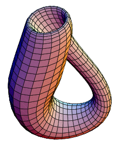

In this section, we will develop an intuition for a topological space and the purpose of topology by investigating two natural examples of topological spaces: curves and surfaces.
Unlike the rest of these notes, we will not rigorously define these concepts. (For example, what do I mean by “locally looks like†in Definition 0.1?) However, many of these ideas will return later in the course and be handled more carefully.
Definition0.1.
A curve is a set of points such that for every point in the set, the set locally looks like a (possibly bent or curved) copy of the real line \(\mathbb R\) or the half line \(\mathbb R^*=\{x\in\mathbb R:x\geq 0\}\text{.}\)
These differences would remain no matter how the curves were stretched or bent. However, while there are certainly geometrical differences beteween Figure 0.3 and Figure 0.4, they are in a certain sense the same object that has been bent or stretched into a different shape.
Definition0.5.
Two objects are said to be topologically equivalent or homeomorphic if one may be bent or stretched into the shape of the other.
So this means that all geometrically similar shapes are homeomorphic (as in Figure 0.6), but we also use the idea of homeomorphism to compare other objects in our daily lives.
For example, while many of them are not curves by our definition, the letters of the alphabet may be considered as topological objects. Figure 0.7 illustrates several homeomorphic expressions of the letter “A”.
Figure0.6.Two similar triangles
Figure0.7.The letter “A†in several fonts.
A homeomorphism is more carefully defined in Section 3, but the central idea is that of “neighborhoods”. For each of the letters “A†in Figure 0.7, note that there are two endpoints and two triad intersections whose neighborhoods look different from the other neighborhoods within the letter; see Figure 0.8.
Figure0.8.Neighborhoods within the letter “A”.
Definition0.9.
A surface is a set of points such that for every point in the set, the set locally looks like a (possibly bent or curved) copy of the plane \(\mathbb R^2\) or the half-plane \(\mathbb R^{2*}=\{\tuple{x,y}\in\mb R^2:x\geq 0\}\text{.}\)
A classic example of the topology of surfaces is the following joke: “A topologist is a mathematician who cannot tell the difference between his doughnut and coffee cup.†The joke is a lot funnier 3  once you've seen this animated GIF on Wikipedia 4 .
The “doughnut”'s surface is known mathematically as a “torus”, shown in Figure 0.10. A sphere is shown in Figure 0.11, and a surface that cannot be cannot be embedded in \(\mathbb R^3\text{,}\) the Klein bottle, is shown in Figure 0.12.
Figure0.10.A torus.
Figure0.11.A sphere.

Figure0.12.A Klein bottle.
While these shapes appear very different, they can all be defined as a “quotient space†(Section 9) of the unit square in \(\mathbb R^2\text{.}\)
In order to study so-called “topological spaces†such as these, we will begin by distilling down the notion of a “neighborhood†for an arbitrary set.
This topological distinction makes sense as both are closed subsets of \(\mathbb R^2\text{;}\) see Section 6 for more info.